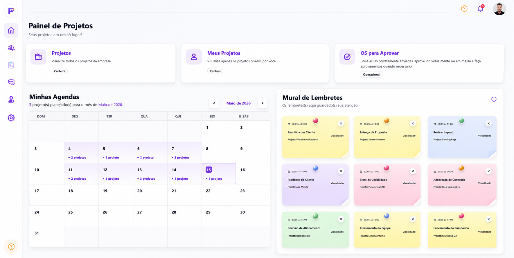
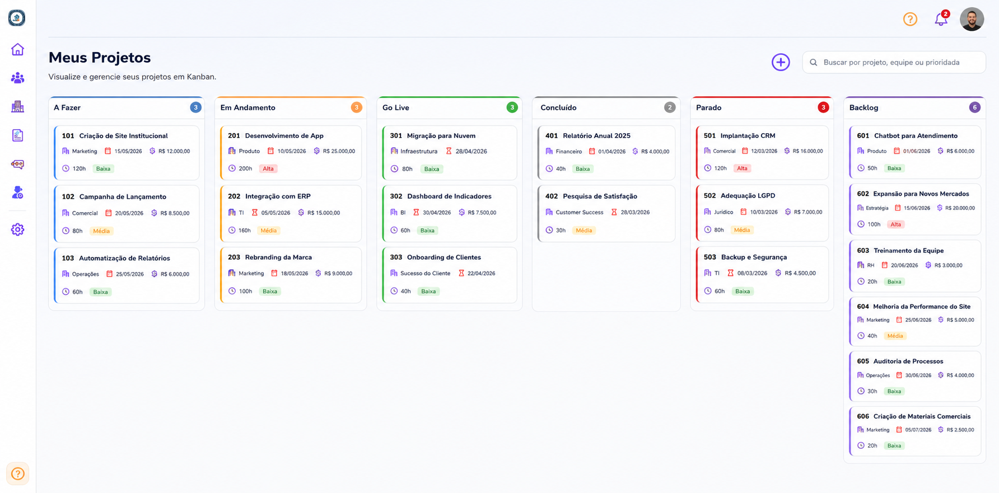
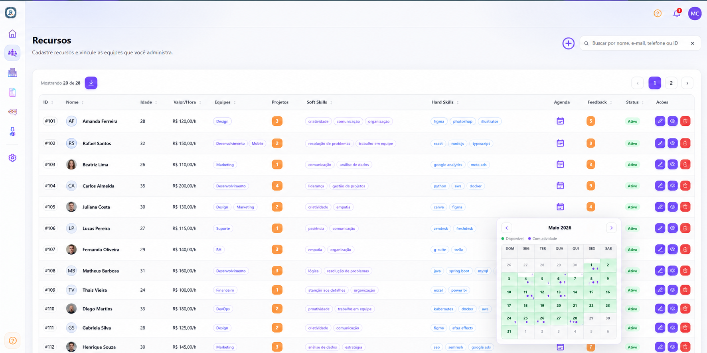
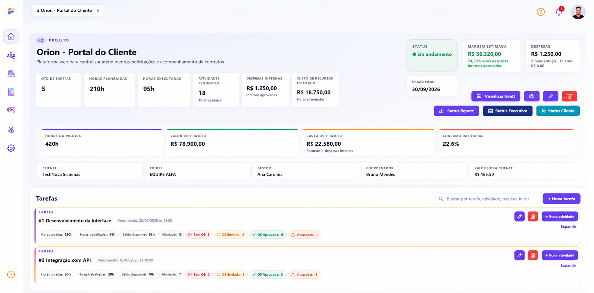

Ferramenta de gestao de projetos gratis por 30 dias
Gestao de projetos com Kanban, Gantt e timesheet sem burocracia.
O FlowProject e uma ferramenta de gestao de projetos para controlar tarefas, atividades, timesheet, ordens de servico, despesas, recursos, agendas, feedbacks, clientes e relatorios em uma experiencia simples para tecnicos, gestores, coordenadores e administradores.
Ganttcronograma visual
Horastimesheet e OS
360cliente e recurso

Mais controle, menos atrito
Projetos, horas, atividades e custos no mesmo lugar.
Painel de projetos
Agenda de projetosVisualize dias com projetos planejados e acompanhe a carga da equipe no calendario.
OS para aprovarAcesse rapidamente apontamentos enviados, aprovacoes e estornos quando necessario.
Mural de lembretesRegistre alertas, combinados e pendencias com historico visivel para a rotina do gestor.
Uma visao clara para acompanhar projetos, agendas e lembretes.
O dashboard do FlowProject centraliza atalhos operacionais, agenda mensal dos projetos e mural de lembretes para que gestores e equipes enxerguem o que precisa de atencao sem depender de planilhas, mensagens soltas ou controles paralelos.

Beneficios para empresas que vivem de projetos, horas e entregas.
O FlowProject foi pensado para transformar a rotina de servicos tecnicos em um processo mais claro, rastreavel e facil de operar, da agenda do recurso ao historico do cliente.
Kanban e Gantt para projetos
Tenha uma visao Kanban dos projetos e grafico de Gantt para acompanhar tarefas, atividades, prazos e dependencias com mais facilidade.
Timesheet e ordens de servico
Acompanhe horas apontadas, atividades executadas, OS, aprovacoes, responsaveis, status e historico para reduzir retrabalho e melhorar a previsibilidade das entregas.
OS e despesas integradas
Controle ordens de servico e despesas integradas aos projetos, com comprovantes, status e fluxo de aprovacao para gestores, coordenadores e administradores.
Recursos, agendas e feedbacks
Cadastre recursos, acompanhe agendas, aplique feedbacks e mantenha uma visao do historico de feedback aplicado a cada recurso.
Historico persistente por cliente
Controle os servicos feitos por clientes e mantenha um historico persistente de projetos, horas, atividades, despesas, OS e evidencias.
Usabilidade sem burocracia
Tecnicos, gestores, coordenadores, admins e Admin Master acessam apenas o que precisam em uma rotina facil de usar para o recurso e para o gestor.
Timesheet, controle de horas e cronograma no mesmo fluxo.
Saia de planilhas soltas e acompanhe a operacao por projeto, recurso, cliente, tarefa, atividade e periodo.
Visualize o andamento dos projetos
Acompanhe status, responsaveis, clientes, prazos e atividades em uma visao visual para facilitar a gestao diaria.
Veja cronogramas e dependencias
Use o grafico de Gantt para entender prazos, tarefas planejadas, atividades em andamento e atrasos antes que virem problema.
Controle horas por tarefa e recurso
Registre horas trabalhadas, gere historico de atividades e acompanhe produtividade por tecnico, cliente ou projeto.
Mantenha historico de servicos
Tenha uma linha do tempo persistente com projetos, OS, despesas, feedbacks, atividades e evidencias vinculadas ao cliente.
Kanban de projetos
Visualize status, prioridade, horas e custos em cada coluna.
A tela de Kanban ajuda gestores e coordenadores a acompanhar projetos por fase, responsavel, equipe, prazo, valor, prioridade e volume de horas planejadas. E uma visao direta para identificar gargalos, atrasos e projetos parados antes que eles afetem a entrega.

Da abertura do projeto ao timesheet, tudo fica em um fluxo claro.
Ideal para empresas que precisam sair de planilhas, mensagens soltas e controles manuais para uma operacao mais profissional, com menos burocracia para o recurso e para o gestor.
1
Cadastre clientes, recursos e equipes
Organize clientes, tecnicos, gestores e coordenadores com permissao certa para cada papel e uma visao facilitada das agendas.
2
Planeje no Kanban e no Gantt
Distribua tarefas, acompanhe status, agendas, cronogramas e responsabilidades sem perder contexto.
3
Aprove OS, timesheet e despesas
Controle horas, atividades, despesas e processos sensiveis com historico, evidencias e visao gerencial.
4
Analise relatorios por cliente
Transforme a rotina operacional em dados para melhorar produtividade, custo, qualidade e historico dos servicos executados.


Status reports automaticos
Status ReportVisao gerencial do andamento, pendencias, horas, custos e alertas do projeto.
Status ExecutivoResumo objetivo para diretores e liderancas acompanharem risco, prazo, margem e evolucao.
Status ClienteComunicacao clara para o cliente acompanhar entregas, tarefas e proximos passos.
Relatorios prontos para gestor, executivo e cliente.
O FlowProject transforma os dados do workspace em status reports automaticos para acompanhar saude do projeto, horas planejadas e executadas, atividades pendentes, despesas, margem, prazo final, custo de recursos e consumo de horas.
Para quais empresas o FlowProject foi criado?
O produto se encaixa muito bem em operacoes B2B que trabalham com projetos, tecnicos, consultores, timesheet, servicos recorrentes e entregas para clientes.
Tambem para gestores independentes que trabalham com participantes.
Uma linha pensada para pessoa fisica, MEI ou gestor de projetos que quer testar uma ferramenta de gestao de projetos gratis por 30 dias e controlar clientes, entregas, horas e recursos por CPF, sem contratar um plano empresarial por CNPJ.
1 Gestor/Admin
O titular da conta gerencia projetos, clientes, participantes, timesheet, despesas e relatorios no proprio espaco de trabalho.
Participantes por limite
Convide analistas, tecnicos, parceiros, freelancers ou prestadores conforme o plano e acompanhe horas, tarefas e agendas com mais clareza.
Projetos ativos
Os planos individuais limitam projetos ativos para manter o custo acessivel e o acompanhamento simples para pequenas operacoes.
Gestor Start
3 usuarios
R$ 29,90/mes
inclui
1 Gestor, 2 Participantes e 15 projetos
Para gestores independentes com poucos projetos simultaneos. Cancele antes do fim dos 30 dias para nao ser cobrado.
Iniciar 30 dias gratisGestor Pro
6 usuarios
R$ 57,90/mes
inclui
1 Gestor, 5 Participantes e 30 projetos
Para quem coordena entregas recorrentes com equipe propria ou parceiros.
Contratar agoraGestor Plus
11 usuarios
R$ 87,90/mes
inclui
1 Gestor, 10 Participantes e 50 projetos
Para gestores com maior volume de clientes, atividades e aprovacoes.
Contratar agoraPlanos com valor fixo para sua empresa crescer com previsibilidade.
Planos empresariais com projetos ilimitados, timesheet, Kanban, Gantt, criacao de administradores, gestores, coordenadores de projetos e tecnicos conforme a faixa de usuarios contratada.
1 a 20 usuarios
R$ 257/mes
planos anuais
20% off
- Projetos ilimitados
- Administradores, gestores e coordenadores
- Equipes tecnicas, timesheet, OS, despesas e relatorios
Para empresas que querem profissionalizar o controle de projetos e equipes.
Contratar21 a 40 usuarios
R$ 387/mes
planos anuais
20% off
- Projetos ilimitados
- Administradores, gestores e coordenadores
- Mais usuarios para equipes tecnicas e controle de horas
Mais espaco para equipes tecnicas, gestores e coordenadores.
Contratar41 a 60 usuarios
R$ 497/mes
planos anuais
20% off
- Projetos ilimitados
- Gestores e coordenadores por area ou cliente
- Kanban, Gantt e relatorios para acompanhar a operacao
Ideal para operacoes com varios projetos simultaneos e times distribuidos.
Contratar61 a 80 usuarios
R$ 697/mes
planos anuais
20% off
- Projetos ilimitados
- Administradores, gestores e coordenadores
- Controle por clientes, equipes, agendas e aprovacoes
Para empresas com operacao tecnica madura e alto volume de atividades.
Contratar81 a 100 usuarios
R$ 847/mes
planos anuais
20% off
- Projetos ilimitados
- Perfis para administradores, gestores e coordenadores
- Governanca para equipes, timesheet e relatorios constantes
Para operacoes maiores que precisam de governanca e relatorios constantes.
Contratar
Todos os planos para empresas incluem projetos ilimitados.
Projetos ilimitados nos planos para empresas, com Kanban, Gantt, timesheet, OS, despesas e relatorios. Crie administradores, gestores, coordenadores de projetos e tecnicos dentro do limite de usuarios. Acima de 100 usuarios, fale com um consultor para uma proposta personalizada.
WhatsApp
Perguntas frequentes sobre o FlowProject.
Respostas objetivas para quem esta avaliando uma ferramenta para gestao de projetos, timesheet, OS e servicos.
O FlowProject substitui planilhas?
Sim. Ele centraliza dados que normalmente ficam espalhados em planilhas, mensagens e controles manuais, mantendo historico e acesso por perfil.
Existe ferramenta de gestao de projetos gratis?
Sim. O plano Gestor Start pode ser iniciado com 30 dias gratis para testar projetos, clientes, participantes, atividades, despesas e relatorios.
Tem timesheet e controle de horas?
Sim. O FlowProject ajuda a registrar horas trabalhadas, acompanhar atividades, aprovacoes, OS e relatorios por recurso, cliente e projeto.
Tem Kanban e grafico de Gantt?
Sim. A ferramenta combina visao Kanban para andamento dos projetos e grafico de Gantt para cronogramas, tarefas, atividades e prazos.
Tem status report automatico?
Sim. O workspace do projeto consolida horas, custos, margem, despesas, tarefas e prazos para gerar status reports para gestor, executivo e cliente.
Serve como software para consultoria de TI?
Sim. Consultorias, software houses, equipes de implantacao e suporte B2B podem controlar clientes, projetos, recursos, horas, despesas, OS, Kanban, Gantt e relatorios.
Serve para equipe tecnica em campo?
Sim. Tecnicos podem acompanhar atividades, registros e informacoes do perfil, enquanto gestores e coordenadores controlam aprovacoes e relatorios.
Consigo controlar despesas?
Sim. A plataforma foi pensada para despesas operacionais, comprovantes, status e aprovacao por perfis responsaveis.
Existe LGPD no sistema?
Sim. O FlowProject possui Central LGPD, aceite por versao, historico de termos, solicitacoes e exportacao de evidencias para auditoria.
Os planos para empresas limitam projetos?
Nao. Os planos empresariais incluem projetos ilimitados e permitem criar administradores, gestores, coordenadores de projetos e tecnicos conforme a faixa de usuarios contratada.
Posso usar como gestor pessoa fisica?
Sim. A linha Gestor Individual foi pensada para cadastro por CPF, com 1 Gestor/Admin, participantes e limite de projetos ativos por plano.
Pronto para organizar projetos, horas e equipes com mais leveza?
Fale com um consultor e veja como o FlowProject pode ajudar sua empresa a ganhar controle sobre projetos, timesheet, ordens de servico, despesas, feedbacks, clientes e relatorios.